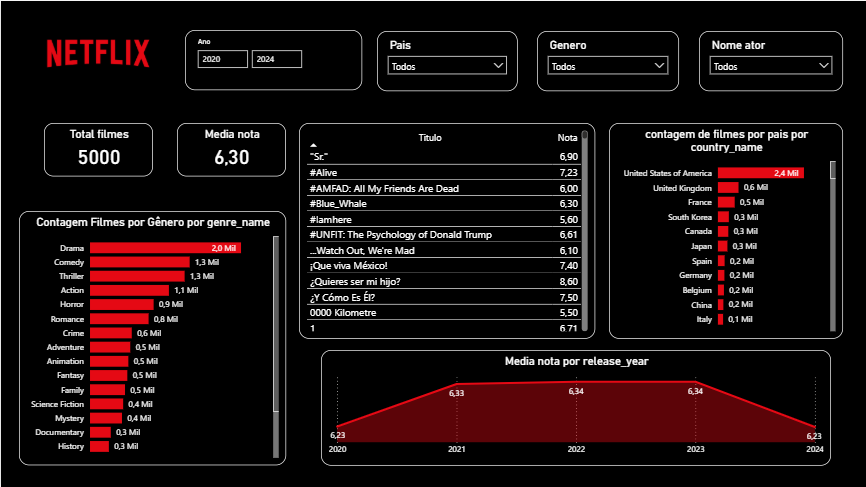
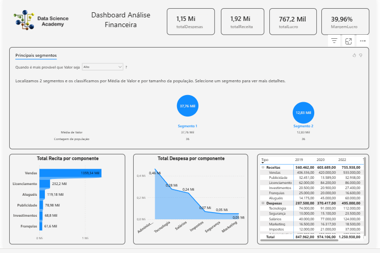

Power BI • SQL • Modelagem Dimensional
Base de dados extraída do Kaggle, originalmente em uma única tabela com informações de filmes, atores, países e avaliações.
Os dados foram tratados com SQL e normalizados em tabelas fato e dimensões, garantindo performance, consistência e escalabilidade para o dashboard.
Print do Dashboard
Vídeo Demonstrativo
Modelagem estruturada no formato estrela, com tabela fato central e tabelas dimensão, incluindo tabelas ponte para relacionamentos muitos-para-muitos, garantindo melhor desempenho e simplicidade analítica.
Tecnologias: Power BI • SQL • Modelagem Dimensional • Kaggle
Dashboard focado em : Total de Receitas,Total de Despesas,Margem de Lucro,Total de Receitas Por Componente,Total de Despesas Por Componenteem relação à média de Despesas,total de Receitase Despesas Por Componente e Por Ano,com a hierarquia Tipo/Componente.Além disso a empresa precisa identificar os segmentos onde Receitas e Despesas são maiores e menores a fim de traçar seu plano estratégico. (com dados fictícios) .
Dados tratados em SQL e organizados em modelo estrela para garantir análises rápidas e confiáveis.
Print do Dashboard
Vídeo Demonstrativo
Tecnologias: Power BI • SQL • Modelagem Dimensional